Biologie 8
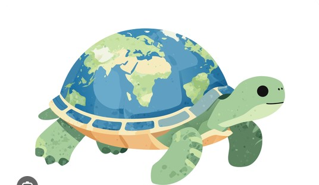
Hier bereitest du dich auf den Test zu Ökosystemen, Nahrungsbeziehungen, Fotosynthese und dem Aufbau des Blattes vor. Die Inhalte stammen aus deinem Biobuch und aus euren Arbeitsblättern – du liest kurze Texte, schaust dir Abbildungen an und beantwortest Fragen zum Anklicken. Bei falschen Antworten bekommst du nach dem zweiten Versuch automatisch einen Tipp.
0 von 4 Modulen geschafft
Dann geht es weiter mit dem Test zum Ausdrucken. Den füllst du von Hand aus – er dauert ungefähr 15 bis 20 Minuten.
Zum Test (test.html) →Was macht einen Lebensraum lebensfreundlich? Und was unterscheidet den Wald von der Wiese?
Forscherinnen und Forscher der europäischen Raumfahrtagentur ESA untersuchen, ob Menschen eines Tages auf dem Mond leben könnten. Der Vergleich mit der Erde zeigt, was Lebewesen wirklich brauchen: flüssiges Wasser, eine schützende Atmosphäre und gemäßigte Temperaturen. Auf dem Mond schwanken die Temperaturen zwischen etwa +130 °C und −160 °C, es gibt keine Atmosphäre und kein flüssiges Wasser. Ohne Schutzanzug könnte dort niemand überleben.
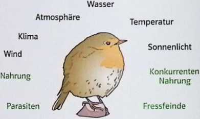
Auf der Erde ist jedes Lebewesen von bestimmten Umweltfaktoren abhängig. Man unterscheidet zwei Arten:
Jedes Lebewesen hat eigene Ansprüche. Das Rotkehlchen frisst Insekten, Larven und Beeren und brütet in Hecken – man findet es im Wald genauso wie im Stadtpark. Der Steinkauz dagegen braucht alte Bäume mit Bruthöhlen. Werden diese gefällt, verschwindet er, selbst wenn genug Nahrung vorhanden wäre.
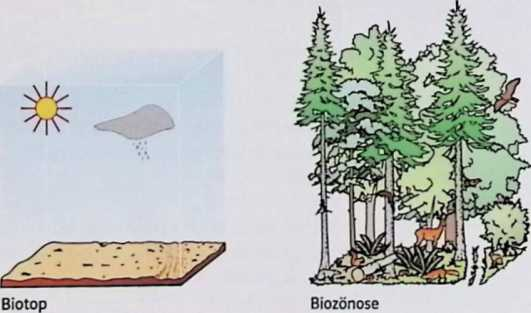
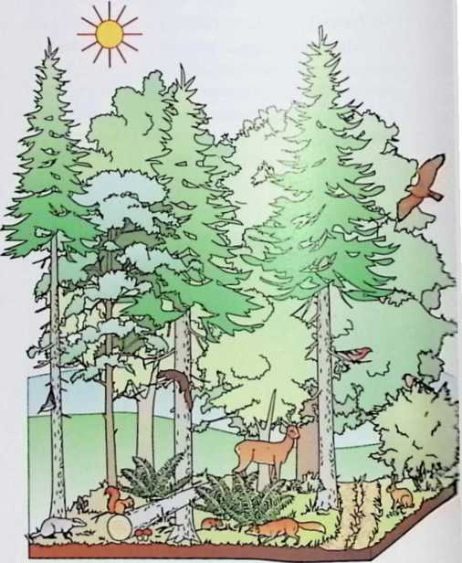
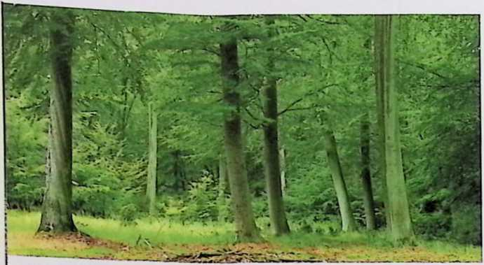
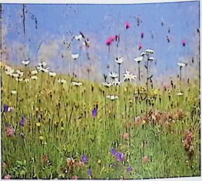
Wald: Bäume stehen in mehreren Schichten übereinander. Diese Schichtung schafft viele unterschiedliche Lebensräume für Tiere – vom Kronendach bis zum Waldboden.
Wiese: ein vom Menschen geschaffenes Ökosystem mit Blütenschicht, Krautschicht, Streuschicht und Wurzelschicht. Ohne regelmäßiges Mähen würde sich eine Wiese über Sträucher nach und nach in einen Wald verwandeln.
Wattenmeer: geprägt durch Ebbe und Flut. Muscheln, Würmer und Krebse müssen sich an den ständigen Wechsel zwischen Wasser und Trockenheit anpassen.
Ihr habt das Ökosystem Wiese schon einmal selbst untersucht. Schau dir deinen eigenen Beobachtungsbogen an:
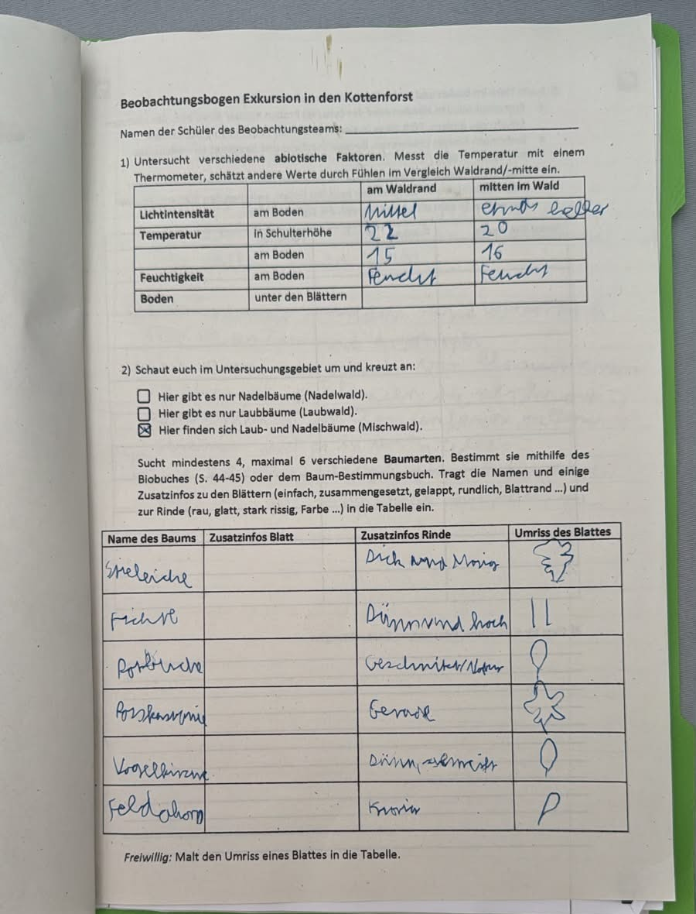
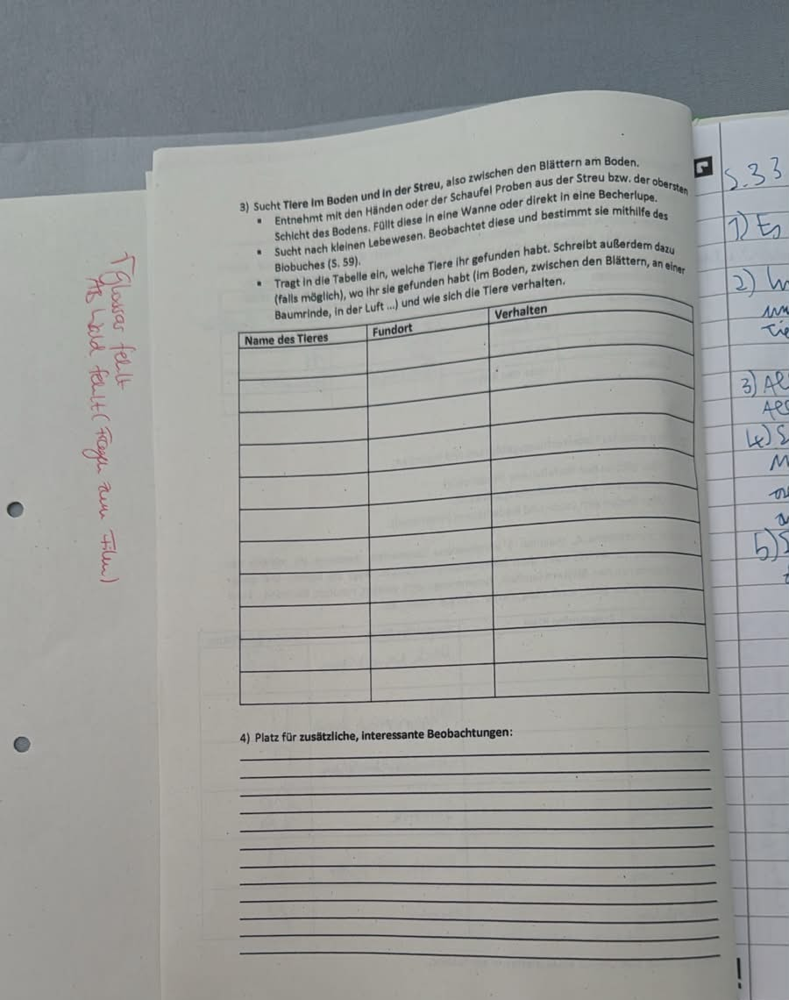
Überlege kurz: Welche abiotischen Faktoren hast du am Waldrand und in der Waldmitte gemessen – und was ist dir dabei aufgefallen?
Laut deinem Bogen war es in der Waldmitte kühler (20 °C statt 22 °C in Schulterhöhe) und der Boden feucht in beiden Bereichen. Außerdem habt ihr sechs verschiedene Baumarten bestimmt (u. a. Stieleiche, Fichte, Rotbuche) – euer Wald war also ein Mischwald.
Frage 1
Welche der folgenden Faktoren sind abiotisch?
Abiotisch heißt unbelebt – denk an Wetter, Boden und Wasser.
Frage 2
Was ist die Biozönose eines Ökosystems?
„Bio-zönose" kommt aus dem Griechischen und bedeutet etwa „Lebensgemeinschaft".
Frage 3 · Richtig oder falsch?
„Eine Wiese bleibt auch ohne Mähen für immer eine Wiese."
Was würde passieren, wenn niemand mehr mäht?
Frage 4
Warum wird der Steinkauz seltener, obwohl genug Nahrung für ihn da wäre?
Es geht um seinen Lebensraum zum Brüten, nicht um Nahrung.
Frage 5
Welches Beispiel ist ein biotischer Faktor?
Biotisch bedeutet: Es hat mit anderen Lebewesen zu tun.
Frage 6
Wie nennt man den Lebensraum mit seinen unbelebten Bedingungen?
Denk an das Wort „Topos" – das bedeutet „Ort".
Wer frisst wen? Von der Nahrungskette zum Nahrungsnetz.
Die Kohlmeise sucht im Wald an Rinde und Blättern nach Insekten und ihren Larven – zum Beispiel nach Eichenwicklerraupen. Diese Raupen wiederum fressen Eichenblätter. Die Kohlmeise selbst wird manchmal vom Sperber gefressen. Solche Abhängigkeiten nennt man Nahrungsbeziehungen.
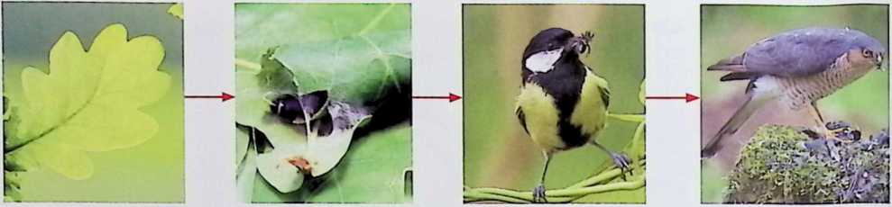
Pflanzen stellen aus energiearmen Stoffen energiereiche Stoffe wie Glucose selbst her. Deshalb nennt man sie Produzenten (Erzeuger). Tiere fressen andere Lebewesen und werden Konsumenten (Verbraucher) genannt. Dabei unterscheidet man:
Eine Nahrungskette zeigt eine einzelne Abfolge: Eichenblatt → Eichenwicklerraupe → Kohlmeise → Sperber. In Wirklichkeit frisst kaum ein Tier nur eine einzige Beuteart. Eichenwickler werden zum Beispiel sowohl von Kohlmeisen als auch von Buntspechten gefressen. Verbindet man alle Nahrungsketten eines Ökosystems, entsteht ein Nahrungsnetz.
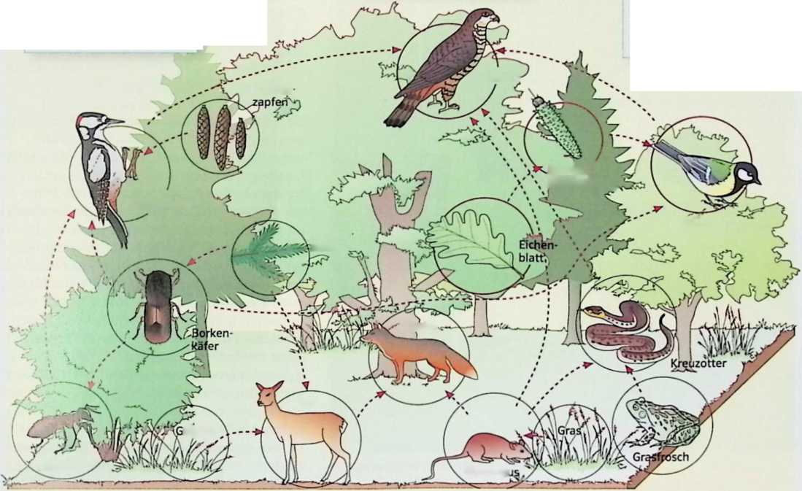
Ein Nahrungsnetz macht ein Ökosystem stabiler: Stirbt eine Art aus, können die übrigen oft auf andere Nahrungsquellen ausweichen. Je mehr Verbindungen ein Nahrungsnetz hat, desto weniger ist eine einzelne Art vom Aussterben bedroht.
Frage 1
Wie nennt man Pflanzen, weil sie selbst energiereiche Stoffe herstellen?
Sie produzieren ihre Nahrung selbst.
Frage 2
Die Eichenwicklerraupe frisst Eichenblätter. Zu welcher Gruppe gehört sie?
Sie frisst direkt eine Pflanze – das ist die erste Stufe der Konsumenten.
Frage 3
In der Kette Eichenblatt → Eichenwicklerraupe → Kohlmeise → Sperber: Welches Glied steht an dritter Stelle?
Zähle von links: Eichenblatt ist Glied 1, dann 2, dann 3 ...
Frage 4 · Richtig oder falsch?
„Ein Nahrungsnetz besteht aus mehreren miteinander verknüpften Nahrungsketten."
Denk an das Bild mit den vielen Pfeilen zwischen Borkenkäfer, Fuchs, Reh und Kreuzotter.
Frage 5
Was passiert in einem artenreichen Ökosystem meist, wenn eine Tierart ausstirbt?
Je mehr Verbindungen ein Nahrungsnetz hat, desto ... stabiler ist es.
Frage 6
Ein Fuchs frisst Mäuse und Kaninchen. Welche Rolle hat er im Ökosystem?
Er frisst andere Lebewesen – was ist er damit?
Woher nehmen Pflanzen ihre Energie, wenn sie doch keine Nahrung fressen?
Pflanzen und Tiere brauchen ständig Energie – für Wachstum, Bewegung oder die Funktion ihrer Organe. Tiere nehmen diese Energie über die Nahrung auf. Man nennt sie heterotroph.
Grüne Pflanzen dagegen nehmen keine Nahrung auf. Sie stellen ihre Nährstoffe selbst her – mithilfe von Sonnenenergie. Man nennt sie autotroph. Dieser Vorgang heißt Fotosynthese und findet in den Chloroplasten der grünen Blätter statt.
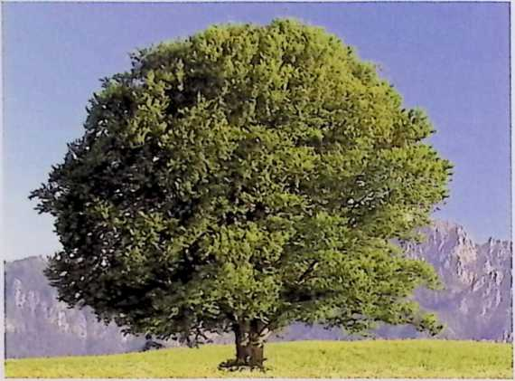
Bei der Fotosynthese entstehen aus Wasser und Kohlenstoffdioxid mithilfe von Lichtenergie Glucose (Traubenzucker) und Sauerstoff:
Wasser + Kohlenstoffdioxid —[Licht]→ Glucose + Sauerstoff
Das Wasser nehmen die Pflanzen über die Wurzeln aus dem Boden auf, das Kohlenstoffdioxid über die Spaltöffnungen aus der Luft.
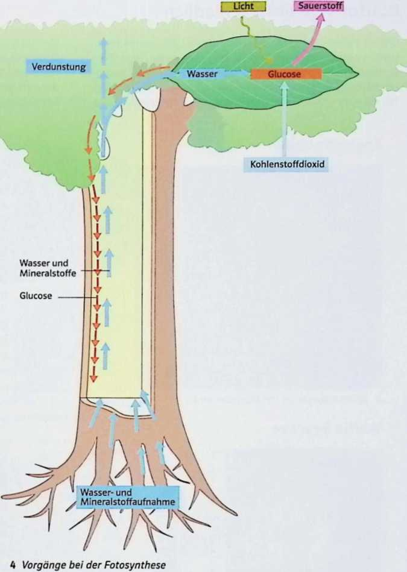
Die Fotosynthese ist enorm leistungsfähig: Eine 100 Jahre alte Buche hat mit ihren Blättern eine Oberfläche von rund 600 m². An einem sonnigen Tag bildet sie damit etwa 13 kg Glucose und 14 kg Sauerstoff. Überschüssige Glucose speichern Pflanzen meist als Stärke, zum Beispiel in Kartoffeln, Getreidekörnern oder Hülsenfrüchten.
Auch Pflanzen betreiben Zellatmung: In den Mitochondrien wird Glucose mithilfe von Sauerstoff zu Kohlenstoffdioxid und Wasser abgebaut. Dabei wird Energie freigesetzt – das ist quasi das Gegenstück zur Fotosynthese.
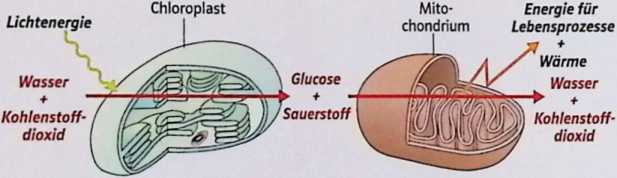
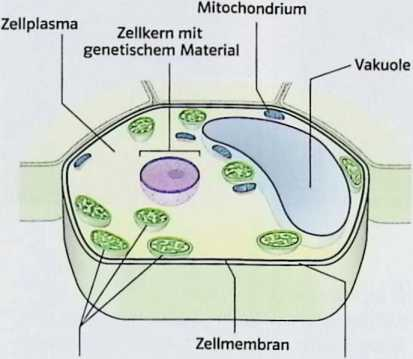
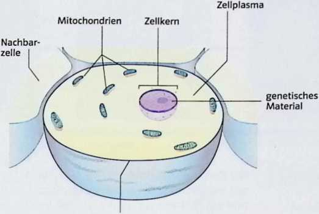
Pflanzenzellen besitzen zusätzlich zum Grundbauplan aller Zellen (Zellkern, Zellplasma, Zellmembran, Mitochondrien) noch Chloroplasten (für die Fotosynthese), eine Zellwand (für Stabilität) und meist eine große Vakuole (Speicher für Wasser und Nährstoffe).
Frage 1
Welche zwei Stoffe entstehen bei der Fotosynthese?
Einer der Stoffe ist ein Zucker, der andere ein Gas zum Atmen.
Frage 2
Woher bekommt die Pflanze das Kohlenstoffdioxid für die Fotosynthese?
Es ist ein Gas aus der Luft.
Frage 3
Warum nennt man grüne Pflanzen „autotroph"?
„Auto" heißt selbst, „troph" heißt Ernährung.
Frage 4 · Richtig oder falsch?
„Pflanzen betreiben nur Fotosynthese, aber keine Zellatmung."
Auch Pflanzenzellen haben Mitochondrien – wofür sind die da?
Frage 5
Welche Bedingungen führen eher zu einer hohen Fotosyntheserate?
Schau dir noch einmal deine eigene Tabelle aus dem Heft dazu an.
Frage 6
Was unterscheidet eine Pflanzenzelle von einer Tierzelle?
Vergleiche die beiden Zell-Abbildungen genau miteinander.
Wo genau in der Pflanze findet die Fotosynthese statt – und wie ist ein Blatt aufgebaut?
Laubblätter bestehen aus mehreren Gewebeschichten, die jeweils eine eigene Aufgabe haben:
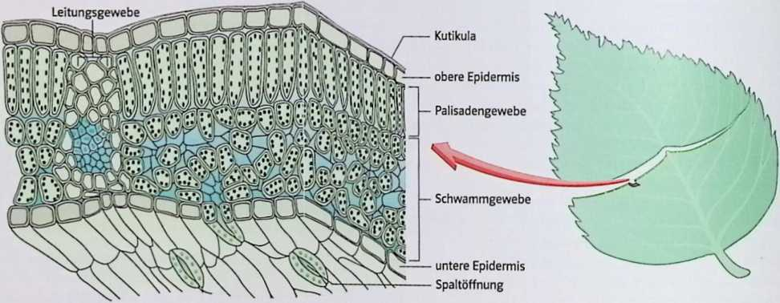
Du hast den Blattquerschnitt schon einmal selbst mikroskopiert und gezeichnet. Vergleiche deine Zeichnung mit der Abbildung aus dem Buch – findest du alle Bestandteile wieder?
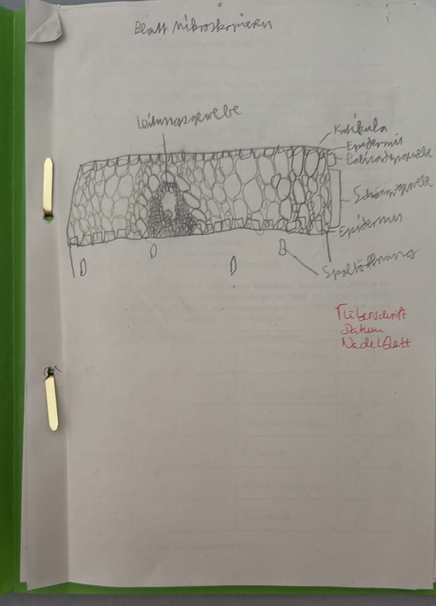
Frage 1
Welche Schicht schützt das Blatt vor dem Austrocknen?
Es ist eine dünne, wachsartige Schicht ganz außen auf dem Blatt.
Frage 2
In welcher Schicht findet der größte Teil der Fotosynthese statt?
Diese Zellen sind lang gestreckt und enthalten besonders viele Chloroplasten.
Frage 3
Wozu dienen die Spaltöffnungen?
Denk an den „Sog", der Wasser aus der Wurzel in die Blätter zieht.
Frage 4 · Richtig oder falsch?
„Bei großer Hitze öffnen sich die Spaltöffnungen noch weiter."
Was würde passieren, wenn die Pflanze bei Hitze immer weiter Wasser verdunstet?
Frage 5
Was transportiert das Leitungsgewebe?
Es verbindet Wurzel und Blätter – was muss zwischen beiden hin- und hertransportiert werden?
Frage 6
Warum liegt das Palisadengewebe direkt unter der oberen Epidermis?
Licht kommt von oben auf das Blatt.
Eine kurze Wiederholung der wichtigsten Inhalte aus allen vier Modulen – keine Fragen, nur zum Nachlesen. Klicke auf die unterstrichenen Begriffe, wenn du zu einem Thema noch einmal ausführlicher nachschauen willst.
Die Erde bietet mit Wasser, Atmosphäre und gemäßigten Temperaturen die Grundlage für . Darin brauchen alle Lebewesen Energie: Pflanzen gewinnen sie selbst durch die in ihren Blättern, vor allem im . Tiere nehmen diese Energie über auf. So hängt am Ende alles Leben im Wald – vom Eichenblatt bis zum Sperber – von der Sonnenenergie ab, die die Pflanzen einfangen.
Wenn du magst, mach jetzt eine Pause – und wenn du bereit bist, geht es weiter mit dem Test zum Ausdrucken.
Zum Test (test.html) →Texte und Abbildungen angelehnt an dein Biobuch (Klett, Biologie 8) sowie eure eigenen Arbeitsblätter und Hefteinträge.